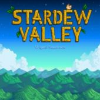

- # ?-0042
- Format: MP3
- Bitrate: ~234 Kbps
- Duration: 2:09:53
- Stardew Valley Overture 2:26
- Cloud Country 1:30
- Grandpa's Theme 1:02
- Settling In 1:48
- Spring (It's A Big World Outside) 3:56
- Spring (The Valley Comes Alive) 4:22
- Spring (Wild Horseradish Jam) 4:05
- Pelican Town 2:17
- Flower Dance 0:30
- Fun Festival 1:57
- Distant Banjo 1:54
- A Glimpse Of The Other World (Wizard's Theme) 1:45
- Summer (Nature's Crescendo) 3:28
- Summer (The Sun Can Bend An Orange Sky) 3:38
- Summer (Tropicala) 3:22
- The Adventure Guild 0:50
- The Stardrop Saloon 1:23
- Luau Festival 1:30
- Dance Of The Moonlight Jellies 1:50
- Fall (The Smell Of Mushroom) 3:33
- Fall (Ghost Synth) 2:37
- Fall (Raven's Descent) 2:49
- The Library And Museum 1:48
- Stardew Valley Fair Theme 1:53
- Festival Game 0:52
- Spirit's Eve Festival 2:05
- Winter (Nocturne Of Ice) 3:20
- Winter (The Wind Can Be Still) 2:50
- Winter (Ancient) 3:04
- Winter Festival 1:25
- A Golden Star Is Born 1:57
- Country Shop 1:04
- Calico Desert 2:08
- Playful 0:54
- Buttercup Melody 1:04
- Pleasant Memory (Penny's Theme) 1:00
- Piano Solo (Elliott's Theme) 0:25
- Land Of Green And Gold (Leah's Theme) 1:24
- A Stillness In The Rain (Abigail's Melody) 1:04
- Starwatcher (Maru's Theme) 1:39
- A Sad Song (Alex's Theme) 0:56
- Pickle Jar Rag (Haley's Theme) 1:05
- Echos (Sebastian's Theme) 0:43
- Grapefruit Sky (Dr. Harvey's Theme) 1:14
- Frozen Pizza And Eggs (Shane's Theme) 1:14
- Song Of Feathers (Emily's Theme) 2:56
- Dreamscape 1:02
- Emily's Dance 1:02
- Alex's Keepsake 0:41
- Band Practice 0:15
- Sam's Band (Electronic Version) 1:03
- Sam's Band (Pop Version) 1:04
- Sam's Band (Bluegrass Version) 1:02
- Sam's Band (Heavy Version) 1:01
- A Dark Corner Of The Past 0:37
- Music Box Song 1:14
- Jaunty 0:54
- Violin Solo 0:23
- Wedding Celebration 0:39
- Mines (Crystal Bells) 2:52
- Mines (A Flicker In The Deep) 1:25
- Mines (Star Lumpy) 1:44
- Mines (Icicles) 1:41
- Mines (Marimba Of Frozen Bones) 1:55
- Mines (Cloth) 1:46
- Mines (Visitor To The Unknown) 2:08
- Mines (The Lava Dwellers) 2:59
- Mines (Magical Shoes) 1:47
- Mines (Danger!) 1:52
- In The Deep Woods 2:06
- Journey Of The Prairie King (Overworld) 1:44
- Journey Of The Prairie King (The Outlaw) 1:06
- Journey Of The Prairie King (Final Boss & Ending) 1:23
- Load Game 1:52